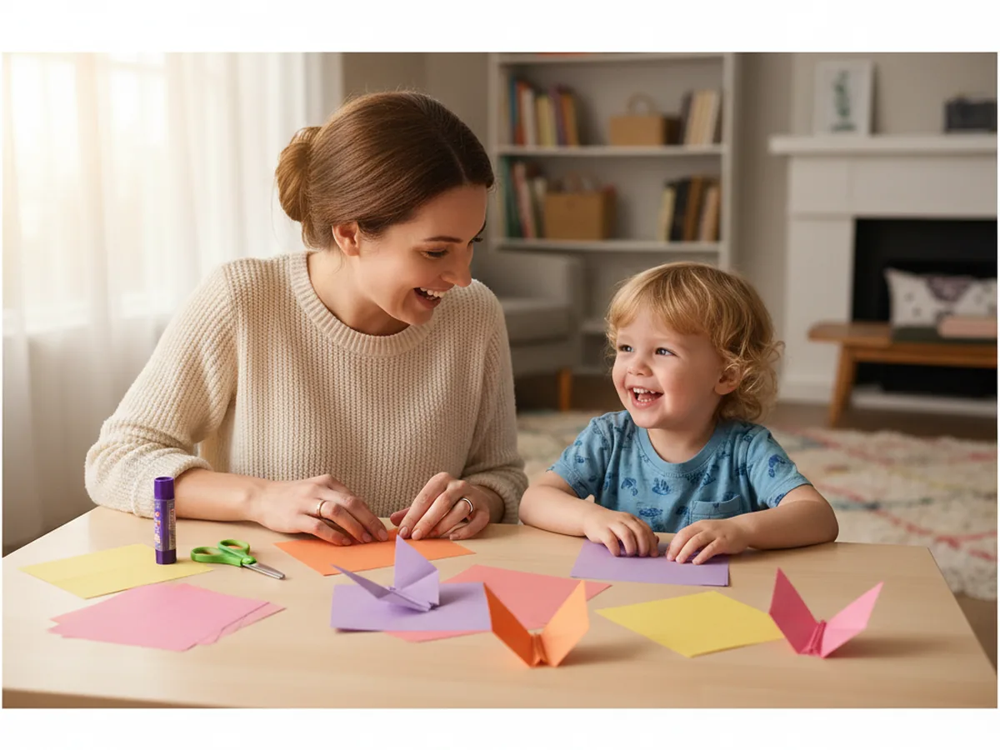
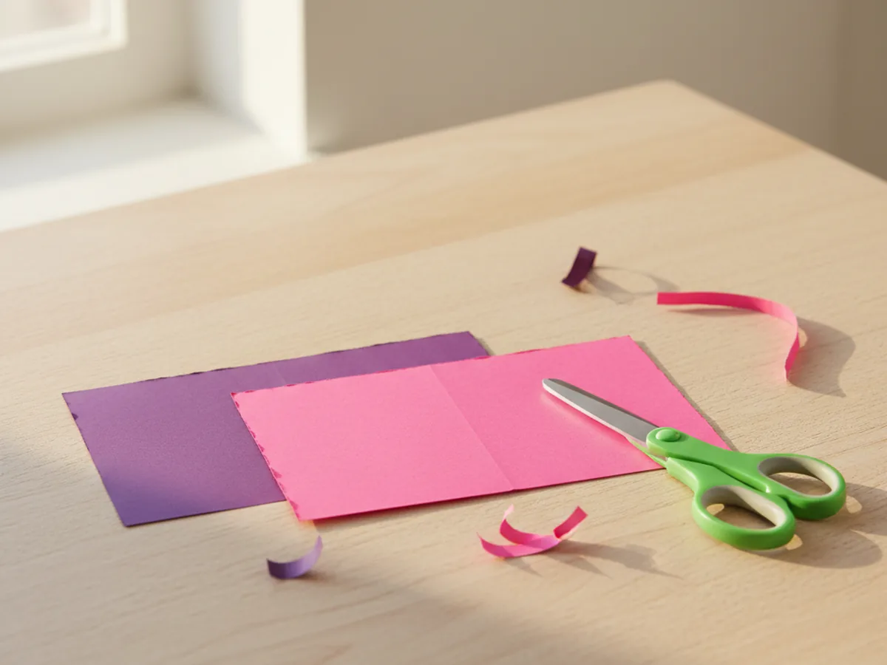
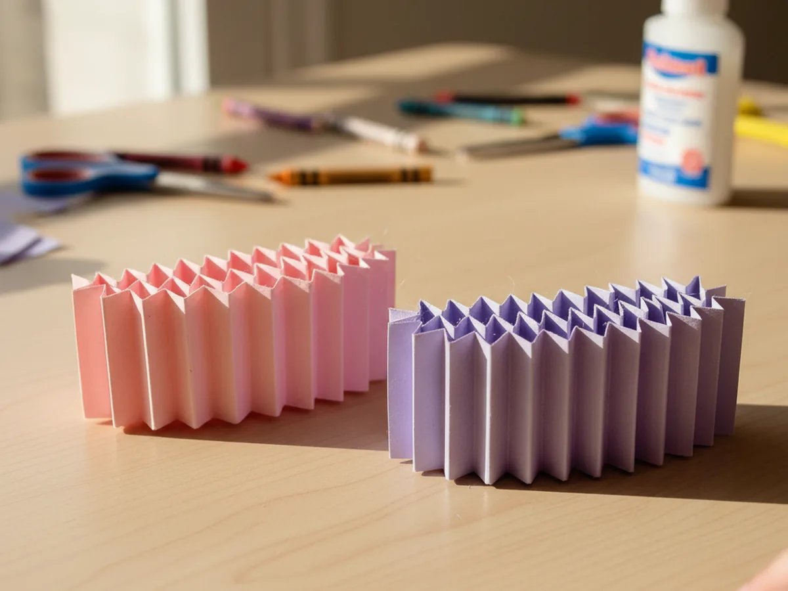
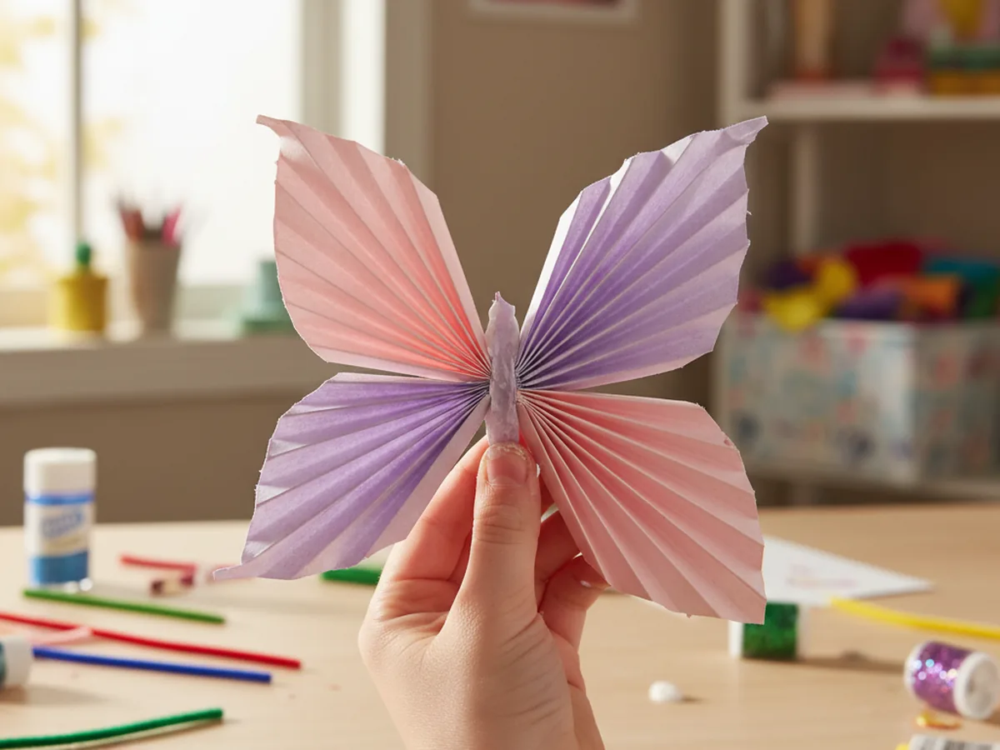
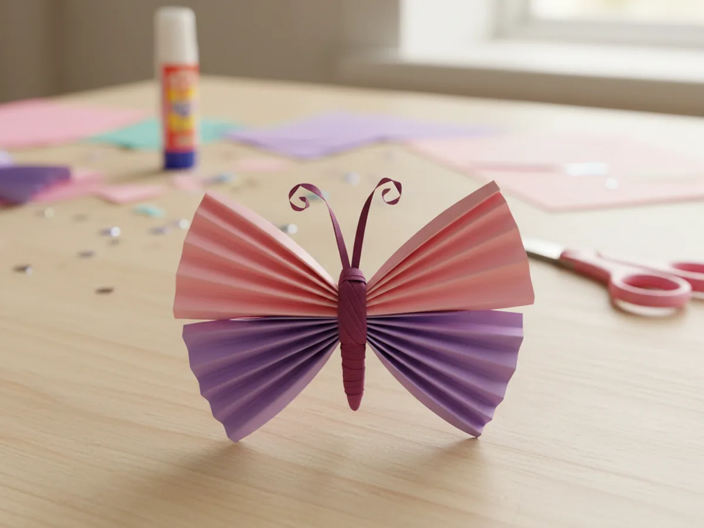
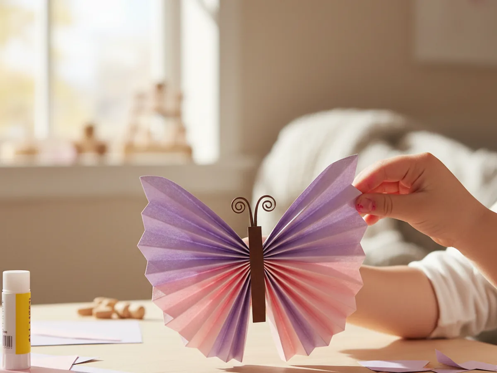
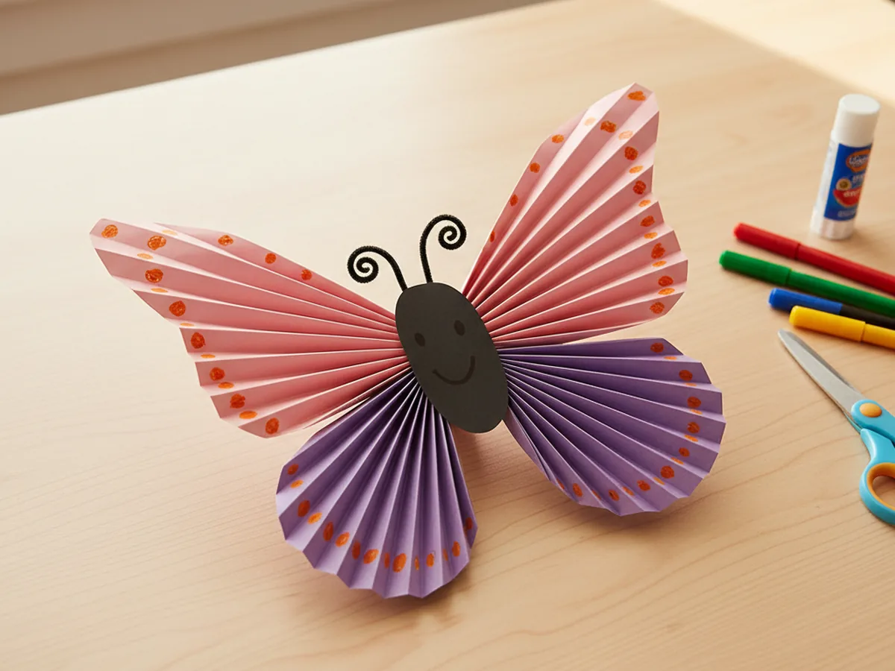

If you are looking for a simple, no-mess activity that looks absolutely stunning when it is done, this paper folding butterfly craft is going to become a family favorite. All you need is colorful paper, scissors, and a glue stick, and in just about 20 minutes you and your child will have a gorgeous accordion-fold butterfly ready to display. 🦋
This paper folding craft is one of those wonderful projects where the technique is so satisfying that kids want to make it again and again. The back-and-forth accordion fold feels almost magical, and watching flat strips of paper transform into a full set of wings never gets old. Whether you are crafting on a quiet afternoon, looking for a spring activity, or just want something fun and easy to do together, this one always delivers.
Why Kids Love This Craft
There is something deeply satisfying about folding paper. The crisp sound of each crease, the way the fan slowly takes shape under small fingers, the moment the wings finally fan out into a full butterfly: children light up at every stage of this paper folding butterfly craft. It feels like a little bit of magic happening right at the craft table.
Beyond the fun, paper folding crafts are genuinely great for young children. The accordion fold requires kids to keep folds even and repeat a consistent motion, which builds concentration, patience, and fine motor precision. These are the same skills that prepare little ones for writing, drawing, and detailed work at school.
The decorating step at the end is just as exciting. Your child gets to add their own personality to the wings with markers, stickers, or whatever materials you have on hand. Every butterfly ends up totally unique, and there is so much pride in holding up a finished project that looks this beautiful. Moms and kids both end up impressed.

What You'll Need
Here is everything you need to make this paper folding butterfly craft. ✂️ I recommend setting it all out before you start so there is no scrambling once little hands are ready to go.
- Colorful origami paper, a pack with lots of colors so you can pick two beautiful shades for the wings.
- Child-safe scissors, for cutting the paper strips cleanly.
- Washable glue stick, to secure the butterfly body and hold it all together.
- Washable markers, for decorating the wings and drawing a face on the body.
- A ruler, helpful for measuring strips but not required.
- Sticker dots or gems (optional), for extra wing decoration.
- A length of string (optional), if you want to hang your finished butterfly.
Step-by-Step Instructions
This paper folding craft comes together beautifully in six easy steps. Follow along slowly and enjoy the process together.
Step 1: Cut Your Paper Strips
Start by choosing two colors of paper that look gorgeous together. Think pink and purple, yellow and orange, or blue and teal. From the first color, cut a rectangle about 8 inches wide and 4 inches tall. This will become the two upper wings. From your second color, cut a slightly smaller rectangle about 6 inches wide and 3 inches tall. This will become the two lower wings.
If your child is comfortable with scissors, let them help with the cutting. For younger children, you can pre-cut the strips before sitting down together so the craft stays smooth and frustration-free from the start.

Step 2: Accordion-Fold Both Strips
Pick up your larger rectangle and start at one short end. Fold it forward about half an inch. Then fold the paper back on itself another half inch in the opposite direction. Keep going, alternating forward and back, until you have folded the entire rectangle into a tight zigzag fan. Press each fold firmly with your fingernail as you go to get clean, crisp creases. Repeat this same process with the smaller rectangle.
When you are done, you will have two neat accordion-style fans. Hold them up and squeeze them gently to admire the pleated look. This is the satisfying part that kids absolutely love about paper folding crafts.

Step 3: Pinch the Strips Together
Hold your larger folded strip and pinch it firmly right at the center point. Then pick up the smaller folded strip and pinch it at its center too. Now place the smaller strip on top of the larger one, crossing them at a slight angle so that the four fanned ends point outward in four different directions. This crossing pattern is what creates the four wings of the butterfly.
Hold them both pinched together at the center while you move on to the next step. It helps to have a second pair of hands here, so this is a great moment to ask your child to hold everything in place while you prepare the body strip.

Step 4: Wrap and Secure the Center
Cut a thin strip of paper about 6 inches long and half an inch wide. Choose a color that will look like the butterfly's body. A darker shade like brown, black, or deep purple works beautifully. Wrap this strip tightly around the very center of your crossed folded pieces, right where they pinch together. Wrap it around three or four times to build up a little body shape, then dab a little glue stick on the end and press it down to secure it.
Once the body is wrapped and secure, gently twist the two free ends of the strip upward and curve them slightly outward. These become the butterfly's antennae, and they add so much charm to the finished paper folding butterfly craft.

Step 5: Fan Out the Wings
Now comes the most exciting moment of the whole craft. Hold the wrapped center firmly and use your other hand to gently fan out each of the four wing sections. Spread the pleats apart evenly so each wing opens up into a full fan shape. Adjust each section until the butterfly looks balanced and symmetrical on all four sides.
Step back and look at what you have made together. A flat piece of paper has become a beautiful, dimensional butterfly. This is the moment kids always gasp a little, and honestly, moms do too. The paper folding craft technique gives such an impressive result for such a simple process.

Step 6: Decorate Your Butterfly
Time to make your butterfly completely one of a kind. Use washable markers to draw spots, swirls, dots, or stripes across the wings. You can draw small circles in a contrasting color, add a row of dots along each fold, or let your child go completely freehand with whatever pattern feels right. Add a tiny face on the body strip if you like, with two small dot eyes and a little curved smile.
Sticker dots and adhesive gems add a fun sparkly touch if you have them. Once everything is decorated and dry, your butterfly is ready to display. Prop it up on a shelf, tape it to a window where the light catches the colors, or thread a piece of string through the body wrap to hang it as a decoration. 🌸

Variations to Try
Mini Butterfly Mobile: Make three or four butterflies in different sizes and colors, then thread a piece of string through each body wrap and tie them at different heights along a small wooden dowel or stick. Hang it near a window and watch the butterflies turn gently in the breeze. This makes a gorgeous spring decoration that children feel incredibly proud to have made themselves.
Rainbow Wings: Instead of using just two colors, cut strips in every color of the rainbow and layer them together before folding. Fan the accordion so the colors blend from red through orange, yellow, green, blue, and violet. This is a wonderful way to talk about color order with young children while making something genuinely beautiful.
Toddler-Friendly Version: Pre-fold both accordion strips before sitting down with a very young child. Then let them focus on the most exciting parts, fanning out the wings and pressing on sticker decorations. They get all the joy and pride of the finished butterfly without the fine motor challenge of the folding step.
More Crafts You'll Love
If your family enjoyed this paper folding craft, these other paper projects are just as fun and simple to do together.
Final Thoughts
This paper folding butterfly craft is one of those projects that surprises everyone with how beautiful it turns out. From the satisfying crunch of each accordion fold to the moment the wings fan open, every step feels rewarding. It is quick, low-mess, and the finished result is something your child will want to show off to everyone they know. 🎨
I hope this paper folding craft brings a little joy and color to your next crafting session. Set out the paper, sit down together, and enjoy the process. Happy folding!